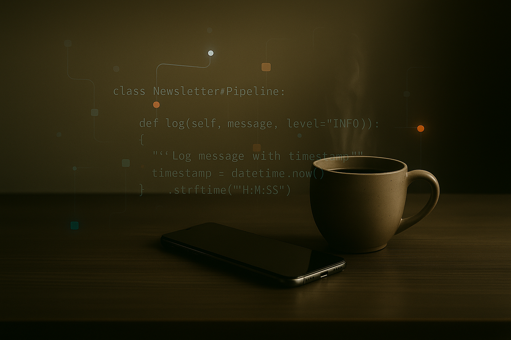

Podcast & Audio Briefs
Automated creation and distribution to your server, Spotify, Apple Podcasts, and Google Podcasts.
> See demo

Daily Signals is an automated market content desk that runs behind the scenes, swiftly turning credible market intelligence across any asset class into ready-to-send podcast shows, social posts, newsletters, etc., in your own brand and voice.
Daily Signals turns trusted market intelligence into newsletters, articles, social posts, and full podcast shows within minutes.
Under the hood, the Daily Signals pipeline turns market noise into structured, channel-ready content.
Branded content is produced and published on a regular cadence and through event-based triggers. Podcast shows, newsletters, social posts, and blog articles are all delivered in your brand and on your schedule.
Every distributed asset is tracked with channel-based metrics, including open rates, click-through rates, engagement levels, completion rates, and delivery logs.
You receive weekly summaries and monthly reports in the formats we agree on. Reports include metrics like output volume, distribution activity, performance across all channels, etc.
Monthly sessions cover performance review, editorial adjustments, timing and cadence decisions, and recommendations on channel mix and content strategy.
We assess your current content workflow, market coverage, constraints, and goals to determine what the pipeline needs to support.
A structured questionnaire is provided with key fields pre-filled based on the discovery process. You only complete the missing information and any clarifications required.
We design templates, content structures, tone rules, and workflow logic using your brand assets and style guidance.
A short pilot run produces real outputs under your brand. This allows stakeholders to evaluate tone, accuracy, and suitability without requiring a large internal team.
The pipeline runs on a fixed cadence or according to event triggers. It produces, distributes, and tracks content while you focus on reviewing and guiding priorities.
Regular reviews assess performance and implement adjustments to editorial focus, formats, timing, triggers, and channels.
Daily Signals produces and publishes branded market content across newsletters, social posts, blog articles, and podcast shows, all on the cadence you choose.
It is a managed service. OM Digital builds, operates, and maintains the full production pipeline for you.
Your involvement can be minimal. Some clients only join a monthly review call while the pipeline runs at about ninety five percent automation.
No. Drafts are fully produced. If you prefer human written versions, OM Digital can arrange that.
The system uses a strict, battle tested anti hallucination workflow refined since March 2025 and relies only on your approved sources.
Any open source feed, any paid vendor you already subscribe to, and your own proprietary research or internal notes.
Yes. You may choose automatic publishing, draft only delivery, or a mix. Time based and event based triggers are both supported.
Yes. Multiple languages, multi brand setups, and asset specific versions such as NVDA or TSLA are supported.
All distributed content is tracked with agreed KPIs such as opens, clicks, engagement, completion, and delivery results. Weekly summaries and monthly reports are included.
Onboarding takes two to three weeks depending on scope. You begin receiving outputs about one week after configuration is complete.